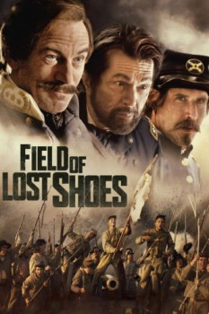

Country:United States, 96 minutes
Spoken languages:English
Genres:War, Drama, History, Action
Director(s):Sean McNamara
Writer(s):Dave Kennedy, Thomas Farrell
Video Codec:Unknown
Number: 4114

Certification:PG-13
Storyline:
A group of teenage cadets sheltered from war at the Virginia Military Institute must confront the horrors of an adult world when they are called upon to defend the Shenandoah Valley.
Cast:
Lauren Holly (as Mrs. Clinedinst), Jason Isaacs (as John C. Breckinridge), Nolan Gould (as Robert / Sir Rat), Keith David (as Old Judge), David Arquette (as Captain Henry A. DuPont)
Medium: Media file,
Location: D:\War Movies\Field.of.Lost.Shoes\Field.of.Lost.Shoes.2014.720p.BRRip.x264.AAC-ETRG.mp4
Loaned: No
Aspect ratio: Unknown